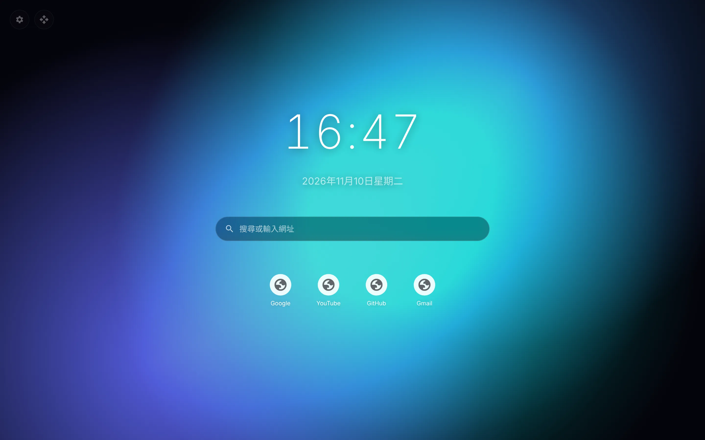

🎞️
上傳影片 / GIF
mp4、webm、gif、圖片都可以，直接拖進新分頁就好。檔案存在你自己的電腦，離線也能播。
mp4、webm、gif、圖片都可以，直接拖進新分頁就好。檔案存在你自己的電腦，離線也能播。
貼上 YouTube 連結，靜音、無控制列、自動循環，像真的動態桌面一樣。
極光、粒子網路、星空、數字雨、雨夜、海浪，顏色、速度、密度隨你調。
時鐘、日期、搜尋框、捷徑、便條，拖到哪就在哪，滾輪縮放，不要的直接隱藏。
齒輪開設定、箭頭進編輯模式。暗化、模糊、填滿方式、播放速度一次搞定。
切到別的分頁自動暫停。不蒐集任何資料，設定只存在你的瀏覽器裡。

安裝後打開新分頁，預設就是會流動的極光。
下載 live-wallpaper.zip，解壓縮到一個不會刪掉的資料夾。
網址列輸入 chrome://extensions，打開右上角「開發人員模式」。
點「載入未封裝項目」，選剛剛解壓縮的資料夾。開一個新分頁就完成了！
Edge、Brave 等 Chromium 瀏覽器也能用同樣方式安裝。
切到別的分頁或縮小視窗時會自動暫停播放。如果用的是大影片，建議 1080p、幾十 MB 以內的循環影片。
不會。檔案存在瀏覽器本機的 IndexedDB，只有你自己看得到，沒網路也能播。
有些影片作者關閉了「允許嵌入」，這類影片無法當桌布。換一支影片，或下載影片後用上傳的方式。
到 chrome://extensions 把 Live Wallpaper 關掉或移除即可。
設定面板「資料」分頁可以匯出 / 匯入設定檔（上傳的影片檔需要另外重新上傳）。